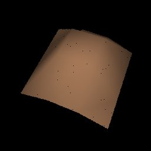

CS348B - Image Synthesis
shen chao - R02944045
Date submitted: 2014/10/28
Code emailed: 2014/10/28
1. heightfield-ray intersection
KEY 1:
Split all the mesh to vector triangles.
Fastheightfield::Fastheightfield(...){} is use to initial HFTriangles
Fastheightfield::Intersect(...){} implement by call HFTriangle's Intersect(...){}
Fastheightfield::IntersectP(...){} implement by call HFTriangle's IntersectP(...){}
KEY 2:
HFTriangle's intersect implement by ray-triangle intersect method.
KEY 3:
Use Grid Acceleration architecture.
Create Three Level BBox data structure.
The first level is triangle's bbox.
The second level is one grid's bbox in quad heightmesh.
The third level is one line grids' bbox in quad heightmesh.
Initial Three Level BBox in triangle creation in Fastheightfield::Fastheightfield(...){}.
Grid Test In Fastheightfield::Intersect(...){} First.
2. smooth shading
Here use the pure Phong interpolation method.
3. performance and others
Because my implementation use phone interpolation and the original is not, my result is not fast than original method.
| 
hftest.pbrt Timings:
|
landsea-0.pbrt Timings:
|
|
landsea-1.pbrt (with Phong interpolation) Timings:
|
landsea-2.pbrt (with Phong interpolation) Timings:
|
|
texture.pbrt (with Phong interpolation) Timings:
|
|
landsea-big.pbrt (with Phong interpolation)
Timings: